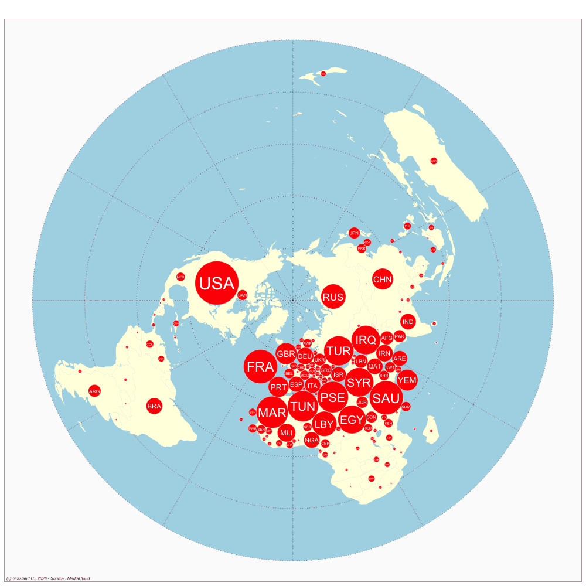

Algeria
- Website : Ennahar online
Scale
- Global
- National
Topics
- General news
- Political news
- Economic news
Publications
Benammar SK. 2020. Mass media in algeria. In Routledge Handbook on Arab MediaRoutledge; 11–21.


Algeria